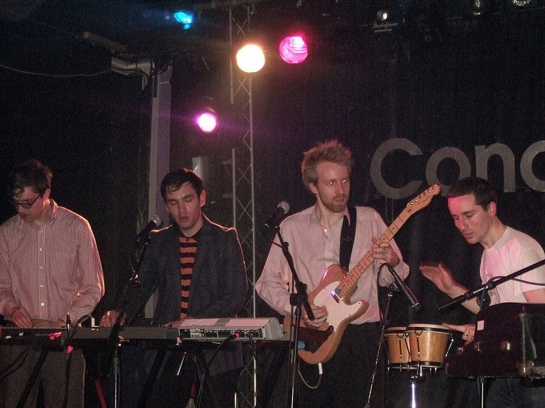

Hot Chip's video tour diary, exclusive to ITM!



With Hot Chip’s eagerly anticipated new album Made In The Dark out now, inthemix has been given the Australian exclusive of a three part Hot Chip video tour diary. Be sure to take a look in ITM-TV to see what goes down when Alexis, Joe, Al, Owen and Felix hit the road!
Hot Chip video tour diary:
> Part 1
> Part 2
> Part 3
Made In The Dark is Hot Chip’s third album and follows the gold selling, Mercury Music Prize nominated album The Warning. The new release Made In The Dark showcases more ballads from Hot Chip than ever before and a great appreciation of deep soul. Alexis’ voice sounds as tender and beautiful as ever evoking an angelic sensuality of folk acts such as Bonnie Prince Billy and Richard and Linda Thompson.
Stay tuned to ITM for updates!